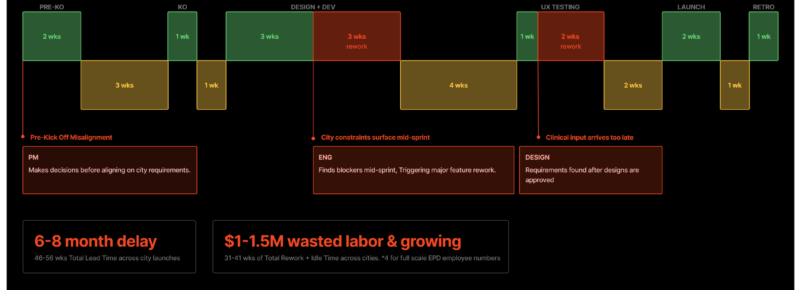
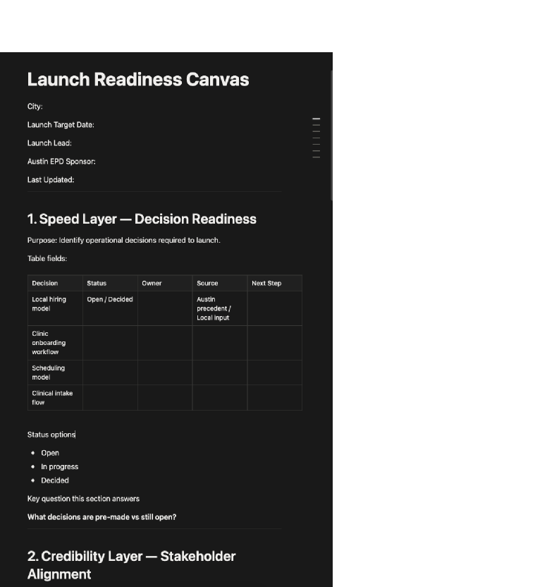
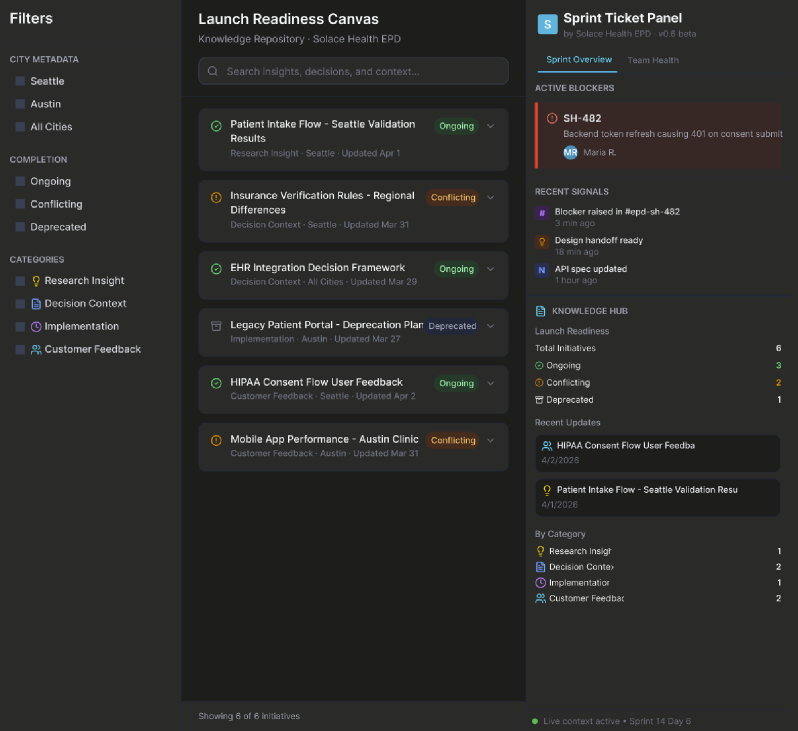
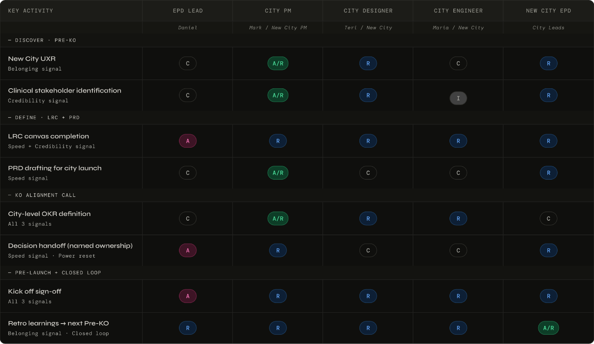
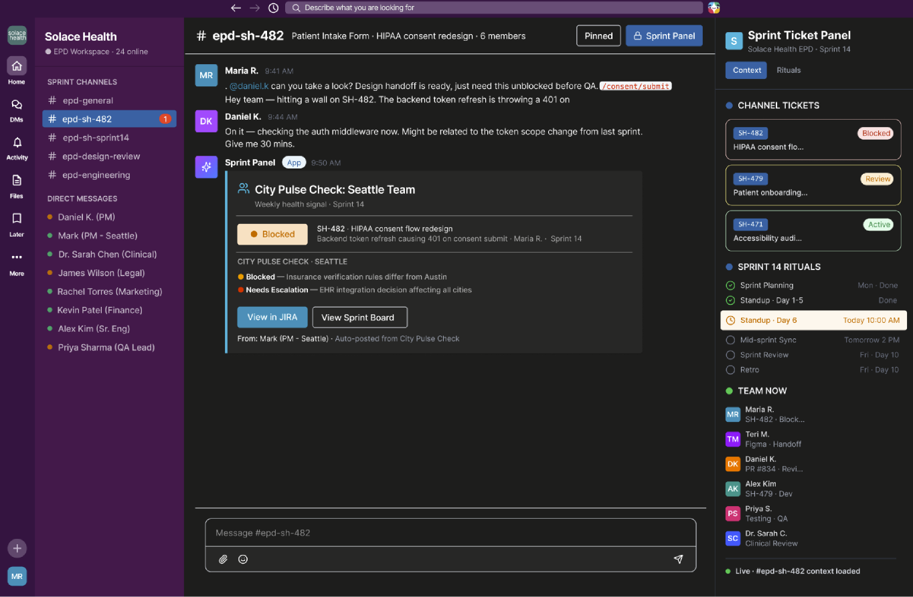
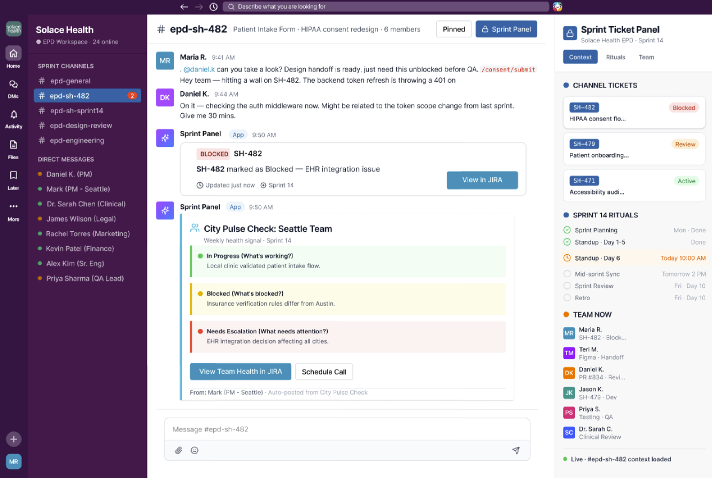

A women's healthcare startup scaling fast, breaking faster.
Solace Health is a women's healthcare startup expanding from Austin across five cities. Growth exposed a structural problem: Austin's core team was making product decisions in isolation, causing sprint rework, delayed launches, and local teams building someone else's product.
Our team of four designed new collaboration workflows, rituals, and tooling for Solace Health's EPD teams. I led the framework design — the structural layer that makes misalignment visible before it compounds.
Three breakdowns, compounding into millions in waste.
Drafts in isolation
Daniel, the Austin PM, creates roadmaps and requirements without cross-city input. By the time local teams see them, the assumptions are baked in.
Hits blockers mid-sprint
Maria discovers architectural conflicts — like an EHR integration that doesn't work in a new city's regulatory context — triggering weeks of rework.
Discovers requirements too late
Teri finds city-specific clinical and demographic requirements after designs are already approved, forcing redesigns from near-final work.

13 EPD professionals. The same problems everywhere.
We interviewed engineers, PMs, and designers across Meta, Netflix, TikTok, Indeed, Walmart, and SAP. Three patterns dominated:
Alignment is the unlock — but it's never handed to you.
Surfacing assumptions early was the single biggest factor in team success. But clarity is never spoon-fed — alignment has to be forged collectively.
Drowning in communication, starving for context.
Teams were buried in Slack, email, and meetings while still lacking visibility into what other disciplines were actually doing. Information overload, zero shared context.
The tools aren't the problem — the gaps between them are.
No tool bridged the space between disciplines. No shared source of truth evolved with the project. Teams relied on meetings and tribal knowledge that broke down at scale.
What success looks like.
Protect sprint efficiency
Tooling that maintains velocity across simultaneous city launches — less rework with every launch.
Eliminate decision ambiguity
Frameworks that make it clear who owns what, and what's been decided — no surprises that send teams back to square one.
Scale institutional knowledge
Every city learns from the last, not just the first. Knowledge accumulates rather than evaporating.
Build two-way decision culture
Local teams flag issues early and shape the decisions that affect them — co-authors, not executors.
Pre-Kickoff Alignment Call & City Pulse Check
A structured 60-minute call before every city launch. The design move: the local PM presents first. Austin listens before it leads. This isn't just polite — it's psychological safety by design. Each call ends with one named decision, documented and witnessed by the full room.
Between calls, a weekly async City Pulse Check keeps alignment alive. Every city team reports what's in progress, blocked, or needs escalation. By Friday, the Austin PM has a full picture without chasing anyone down.
Launch Readiness Canvas & Decision Context Log
The Launch Readiness Canvas gets filled out during weekly calls. Every section has a named owner. The Decision Context Log persists across launches — the next city inherits it, required reading before any new PRD. Institutional knowledge scales through a living artifact tied to real decisions, not tribal knowledge.



Sprint Ticket Panel — bridging the gaps between tools
The disconnect between team members wasn't just happening within tools, but between them. Instead of building another standalone product, we designed a lightweight plugin — the Sprint Ticket Panel — that connects Jira, Slack, and Notion within teams' existing workflows.



Catching misalignment before it compounds.
Teri, a designer on the Chicago expansion, catches an assumption that doesn't hold in this market. Under the old way, her flag gets buried. Here's what happens instead:
Teri flags it right where she's working — no extra step, no chasing anyone down.
Her flag surfaces in the weekly async. The right people see it. If it needs a decision, it routes to the alignment call.
The decision lands in the Decision Context Log. It's documented, not lost. Teri can see what happened to her flag without asking.
The log feeds the retro. The learnings shape the next cycle.
Two rounds of usability testing. One clear lesson.
Round 1 — Findings
Round 2 — Refinements

People didn't reject AI assistance. They rejected AI that didn't give them a reason to trust it. The system needs to support decisions, not make them. Agency isn't a feature; it's the prerequisite.
Speed, credibility, belonging.
Speed
Are teams maintaining momentum while reducing costs as new cities scale? Fewer sprint disruptions, shorter rework cycles, faster time-to-launch.
Credibility
Are decisions documented with owners and context? Is product knowledge accumulating rather than evaporating? Institutional memory as competitive advantage.
Belonging
Are local teams saying "we" instead of "they"? Are they shaping decisions, not just executing them? The hardest to measure and the most important.
Psychological safety is designable.
Working at the systems level meant designing rituals, decision flows, and knowledge structures instead of screens. The core insight: psychological safety isn't just a value to aspire to — it's designable. Who speaks first, who owns what, where knowledge lives — these determine whether the product succeeds more than any interface decision.
The usability testing reinforced this: people didn't reject AI assistance, they rejected AI that decided for them. You can design the conditions for trust, but you can't automate trust itself.